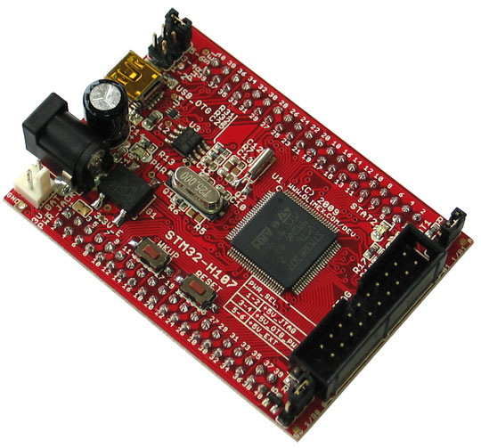
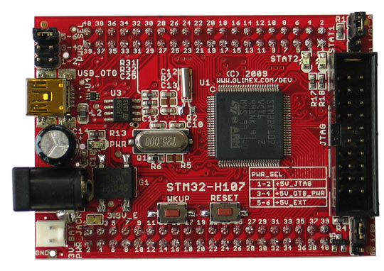
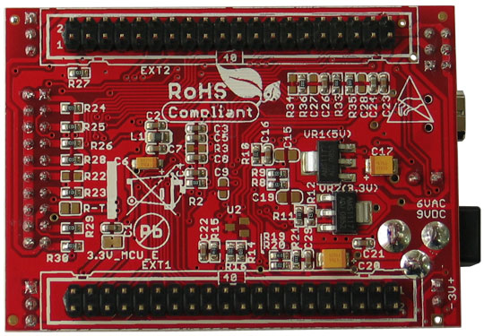

STM32-H107 HEADER BOARD FOR STM32F107 CORTEX-M3 MICROCONTROLLER

INTRODUCTION:
The ARM Cortex-M3 processor is the latest generation of ARM processors for
embedded systems. It has been developed to provide a low-cost platform that
meets the needs of MCU implementation, with a reduced pin count and low-power
consumption, while delivering outstanding computational performance and an advanced
system response to interrupts. The ARM Cortex-M3 32-bit RISC processor features
exceptional code-efficiency, delivering the high-performance expected from an
ARM core in the memory size usually associated with 8- and 16-bit devices.
The STM32F107 Performance Line family has an embedded ARM core and is therefore
compatible with all ARM tools and software. It combines the high performance
ARM Cortex-M3 CPU with an extensive range of peripheral functions and enhanced
I/O capabilities. STM32-H107 is low cost development board for the new ST Cortex-M3
based microcontrollers STM32F107VCT6. This board is perfect solution for USB
peripherials development. All microcontroller ports are available on extension
connectors.
FEATURES:
ORDERING CODES: STM32-H107 - assembled and tested board, includes STM32F107 microcontrollerClick here for our PRICELIST and shipping options, and click here to learn HOW TO ORDER